Administración del servidor de aplicaciones
Revisión de conceptos
Vamos a revisar algunos de los conceptos ya vistos con anterioridad. Dentro de un dominio debemos disponer de un servidor de administración. Este servidor se encargará, entre otras, de las siguientes tareas:
- Mantenimiento del fichero de log. Todos los mensajes de los distintos servidores así como los propios del dominio se almacenarán en el fichero log del dominio.
- Leer y escribir en el fichero config.xml. Este fichero contiene toda la configuración del dominio (nombre de los servidores, puertos, aplicaciones disponibles, etc.).
- Proporciona información de configuración cuando arrancan los servidores administrados. Por ello, el servidor de administración debe estar en marcha cuando arranquen el resto de servidores. Una vez arrancados todos podemos parar el de administración.
- Permite monitorizar el comportamiento de los servidores y cambiar su configuración.
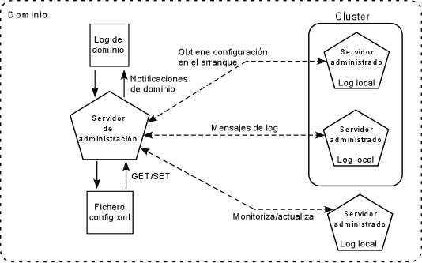
Creación y configuración de dominio
Como ya hemos visto anteriormente, WebLogic incorpora una herramienta para crear el dominio, definiendo los servidores que formarán parte del dominio. Si necesitamos añadir nuevos servidores veremos más adelante que podemos hacer uso de la consola de administración.
Arranque de servidores
Una vez creado el dominio junto con sus servidores, cuando arrancamos un servidor nos va a pedir el nombre y la contraseña del usuario de administración. El servidor de administración se arranca simplemente ejecutando startWebLogic.cmd. Para los servidores administrados debemos indicar la dirección del servidor de administración:
bin/startManagedServer.cmd servidor2 http://localhost:7001
donde servidor2 es el nombre del servidor que queremos arrancar y a continuación indicamos la dirección y el puerto de escucha del servidor de administración.
Definición de servidores dentro del dominio
Un servidor de aplicaciones no es más que una instancia de la clase weblogic.Server. Vamos a ver cómo podemos crear nuevos servidores desde la consola de administración. Pinchamos en la opción servers (desde la estructura de dominio, dentro de environment o desde la página inicial) y nos aparecerá una página como la siguiente donde tenemos los servidores definidos en nuestro dominio y podemos definir nuevos.
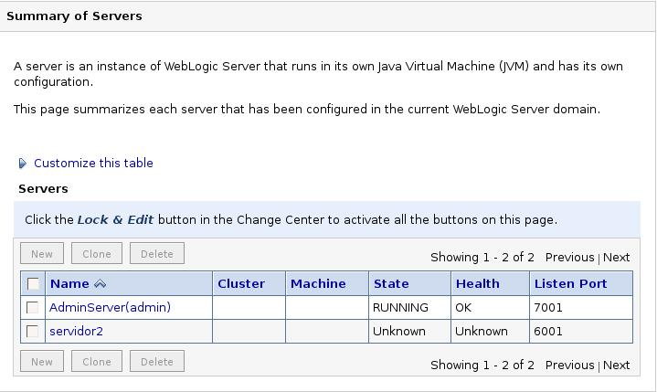
Podemos hacer tres cosas: crear un nuevo servidor, clonar o borrar uno ya existente (seleccionándolo antes). Recordad que debemos pinchar en Lock and Edit para editar.
Si pinchamos en crear uno nuevo (New) nos aparece la siguiente ventana:
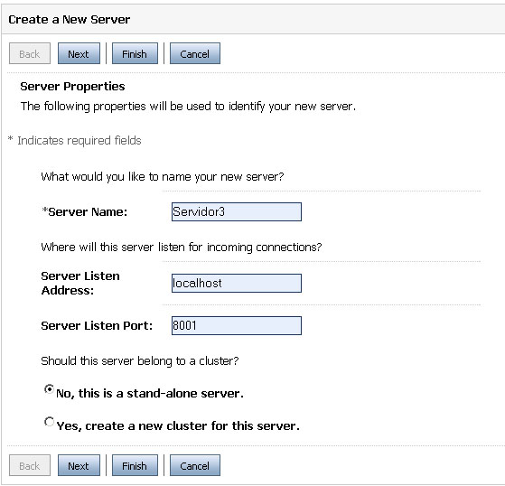
Aquí damos el nombre, dirección y puerto de escucha. Dejamos para más adelante lo referente al cluster. El servidor nos aparecerá en la lista de servidores y podemos pasar a configurarlo. Esto lo podemos hacer para cualquier servidor en nuestro dominio. Pinchamos sobre el nombre del servidor y nos aparecerá esta ventana:
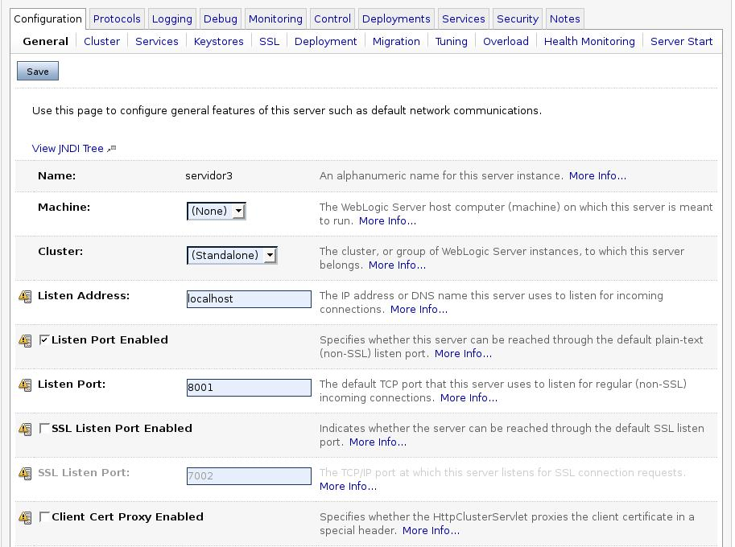
Las opciones disponibles son:
- Name: el nombre del servidor. Debe ser único en el dominio.
- Machine: si ya tenemos definidas máquinas podemos asignar este servidor a una de ellas. Esta operación la podemos hacer más adelante.
- Cluster: ídem al anterior pero con los clusters.
- Listen Address: la dirección (IP o DNS) de escucha del servidor.
- Listen Port Enabled: al activar esta opción permitimos la escucha por un puerto.
- Listen Port: el puerto de escucha del servidor. Dos servidores en la misma máquina no pueden tener el mismo puerto de escucha.
- SSL Listen Port Enabled: nos permite activar el puerto de escucha con protocolo seguro.
- SSL Listen Port: El puerto de escucha seguro.
- Client Cert Proxy Enabled: con esta opción especificamos que se envíe un encabezado especial con el certificado del cliente.
- Java Compiler: indica el compilador de java a emplear en todas las aplicaciones de este servidor.
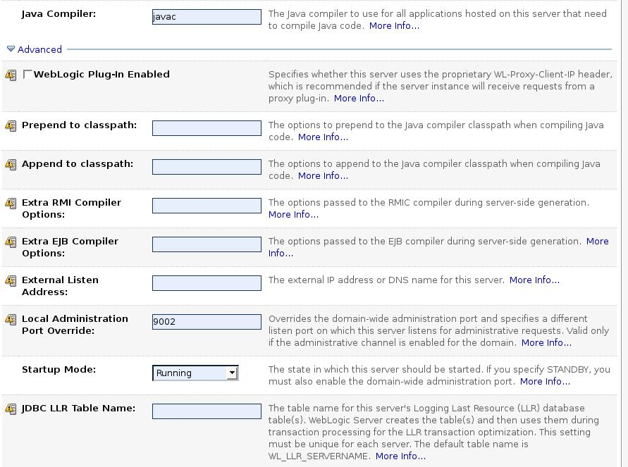
Sin pinchamos en opciones avanzadas nos aparecen las opciones mostradas en la anterior figura (comentamos las más utilizadas):
- Startup Mode: Podemos arrancar un servidor en dos modos: RUNNING en el cual se ejecuta normalmente y STANDBY en el que permite comandos del servidor de administración pero no reponde a peticiones de sus aplicaciones.
- Prepend/append to classpath: directorios a añadir antes o después del CLASSPATH actual.
- External Listen Address: es la dirección de escucha tal como se ve desde fuera de nuestro sistema.
Nos saltamos las siguientes solapas hasta Health Monitoring:
- Auto Restart: indica que el servidor se intentará reiniciar después de un fallo.
- Auto Kill if Failed: si la activamos, el node manager matará al servidor si este ha tenido algún fallo.
- Max Restarts Within Interval: número de veces que se intentará reiniciar al servidor durante un intervalo de tiempo predefinido.
- Restart Delay Seconds: numero de segundos a esperar antes de intentar reiniciar.
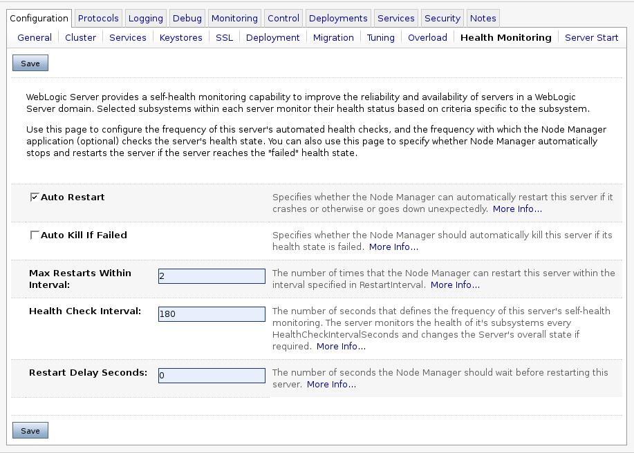
Pasamos a la solapa de protocolos. En la subsolapa de HTTP tenemos las siguientes opciones:
-
Post Timeout/Max Post Size: se utiliza para prevenir los
ataques DoS. Un ataque DoS (Denial of Service: denegación de
servicio) tiene como consecuencia la caída del servidor. Lo suelen
utilizar hackers para echar abajo un sistema. El ataque puede ser llevado
a cabo de dos maneras:
- Por el envío de sucesivos paquetes incompletos. Cuando enviamos un paquete incompleto, el servidor queda esperando el resto del paquete. El envío de muchos de estos paquetes puede colapsar el servidor. Para combatir este tipo de ataque debemos configurar Post Timeout que es el tiempo de espera máximo para recibir el siguiente paquete.
- Por el envío de un paquete de datos demasiado grande que sobrepasa la memoria del sistema. La protección que podemos realizar es indicar en la opción Max Post Size el tamaño máximo de paquete a recibir. Por defecto está en -1 que indica que no existe limitaciónd e tamaño.
- Enable Keepalives: permite el mantenimiento de una conexión permanente al servidor.
- Duration: tiempo transcurrido antes de cerrar una conexión inactiva.
- HTTPS Duration: ídem conexión segura.
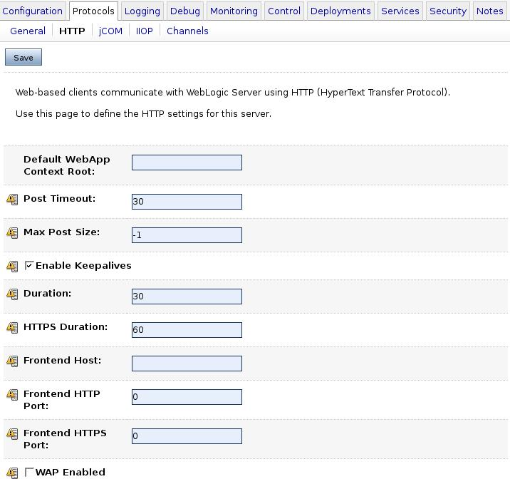
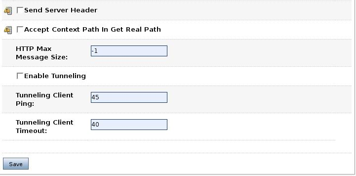
En la solapa Logging podemos configurar las opciones del fichero que contendrá los mensajes del servidor. En la siguiente figura se muestran los datos más genéricos, ya explicados en el apartado del log de dominio. La siguiente solapa, Rotation Type, permite modificar el tipo de rotación del fichero log. Las opciones también se detallaron anteriormente. La última opción, Rotate file rotation on startup, indica que nada más arrancar el servidor se inicializa el fichero log.
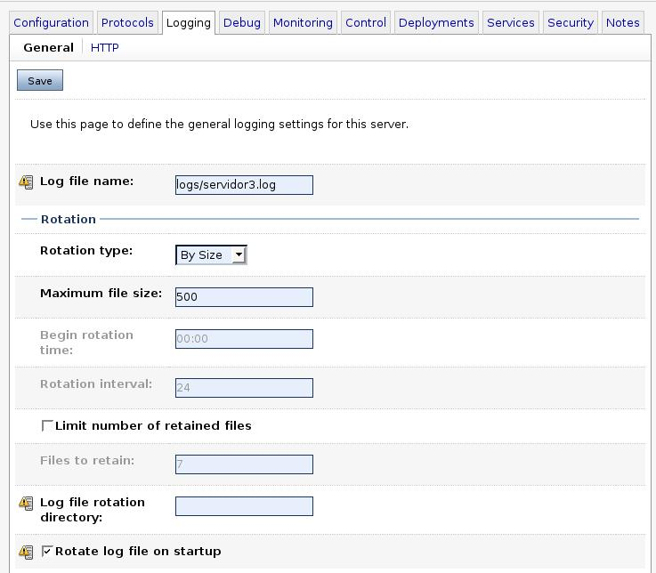
Las opciones avanzadas del logging nos permiten monitorizar los mensajes de error, según el tipo y el nivel de seguridad: Stdout severity threshold permite cambiar el nivel de error que muestra los mensajes. Por defecto se mostrará un mensaje si existe un error. Podemos bajar o subir el nivel de error para que muestre un mensaje, por ejemplo, cuando existe una advertencia.
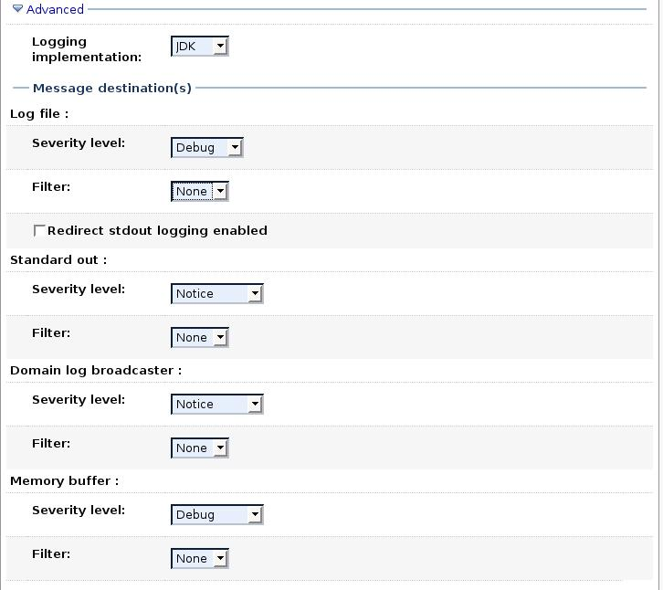
En Debug se nos permite seleccionar qué opciones (servicios, elementos, etc.) de nuestro sistema y servidor queremos que se monitorice. Advertencia: hay que tener mucho cuidado con seleccionar JDBC: el nivel de información puede desbordar nuestro disco.
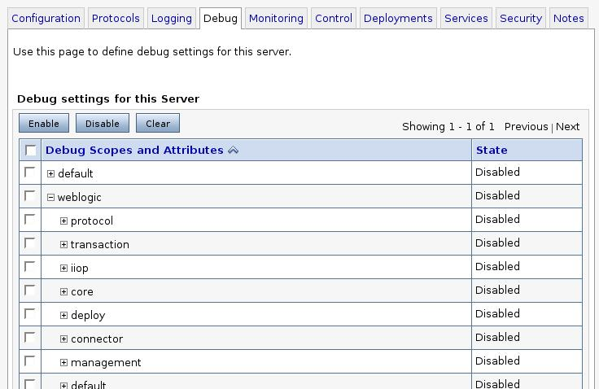
En Monitoring, pinchamos en las opciones avanzadas y nos proporciona toda la información tanto del servidor de aplicaciones como del sistema operativo y Java (el servidor tiene que estar activo para que nos proporcione esta información).
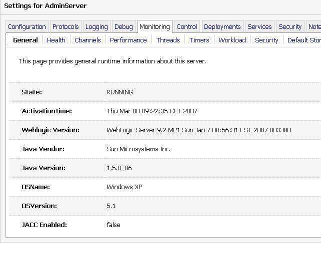
La opción Health nos muestra el funcionamiento de distintos servicios. Para cada uno nos proporciona información indicando si algo ha fallado.
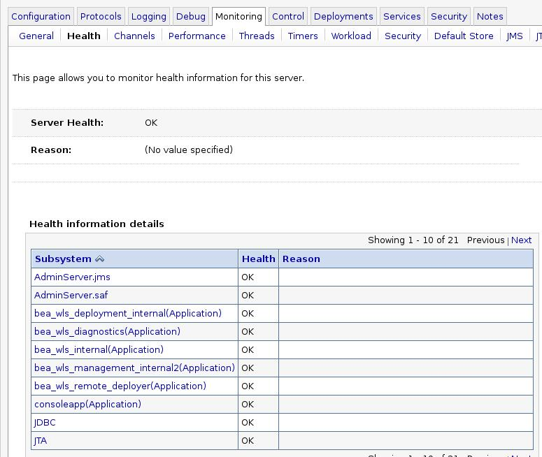
Workload nos indica el trabajo realizado y el pendiente por realizar de algunas clases.
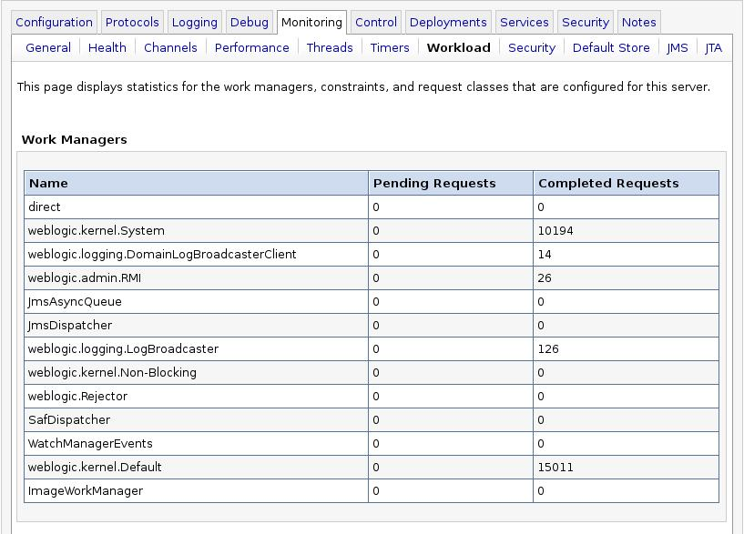
La solapa Security nos permite monitorizar los intentos de entrada al sistema inválidos y el número de usuarios bloqueados. Puede servir para monitorizar intentos de acceso inválidos.
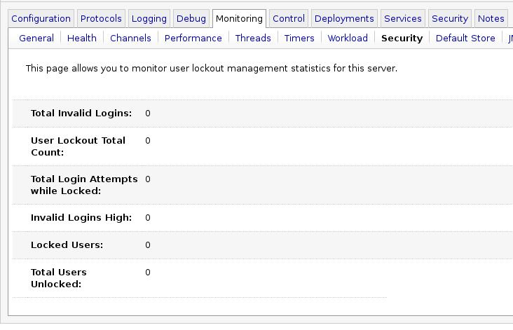
En la solapa Control->Start/Stop podemos arrancar y parar el servidor en distintos modos. La opción Graceful Shutdown timeout indica el tiempo que esperaremos antes de forzar el apagado del servidor (siempre con el apagado Graceful que espera a que todas las sesiones HTTP hayan terminado). Indicando el valor cero estamos diciendo que esperará indefinidamente. Si activamos la Ignore Sessions During Shutdown, no se tendrán en cuenta las sesiones. También podemos asignar un tiempo de espera antes del arranque. Más abajo tenemos las opciones de arranque y parada. La primera que nos aparece (Start) arranca el servidor (para hacerlo necesitaremos el Node Manager). La segunda reinicia el servidor. Suspend puede suspender la ejecución del servidor ahora mismo o dejarlo terminar la tarea actual. Shutdown para el servidor, permitiendo igual que antes forzarlo o esperar a que termine.
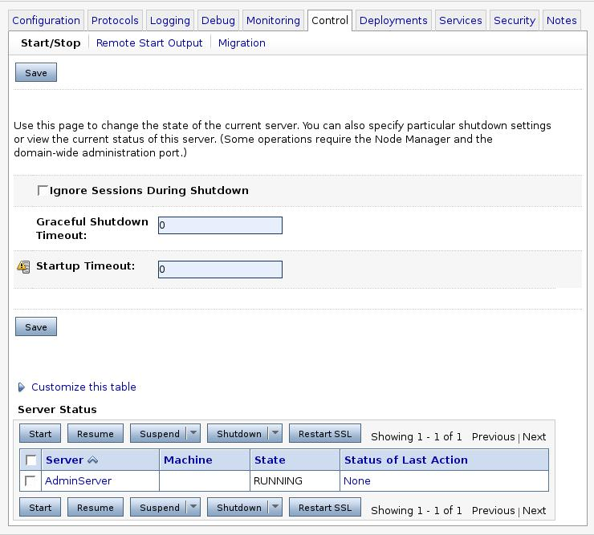
Definición de máquinas
Una máquina es un reflejo de una máquina física que soporta nuestro sistema. Weblogic se puede instalar en multitud de plataformas (Unix, Windows, Solaris, etc.). Una de las principales ventajas de Weblogic es que se pueden utilizar distintos tipos de máquinas en el mismo sistema. Por ejemplo, podemos tener una máquina Linux con un par de servidores y otra máquina Windows NT con otro par, funcionando todo dentro del mismo dominio y dando el mismo servicio. Cuando pinchamos en la opción Machines nos permite visualizar las máquinas que tiene nuestro sistema y también nos permite configurar nuevas máquinas.
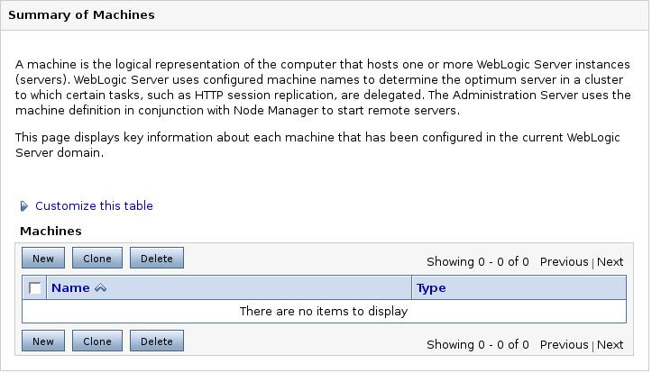
Cuando pinchamos en New nos aparece la figura siguiente donde podemos dar nombre a la máquina. Este nombre es propio de Weblogic, es decir, no es nombre DNS ni IP. Podemos configurar una máquina de tipo Unix (Linux, etc.) o un tipo distinto de máquina.
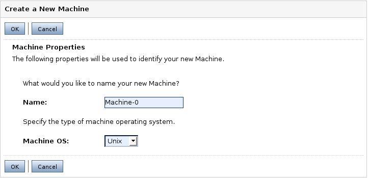
La diferencia es que en las máquinas de tipo Unix nos permite configurar opciones adicionales (en las otras sólo nos deja el nombre). Las siguientes opciones, que sólo aparecen en máquinas Unix, son el nombre de usuario y de grupo con los que se ejecutarán los procesos instanciados en esa máquina.
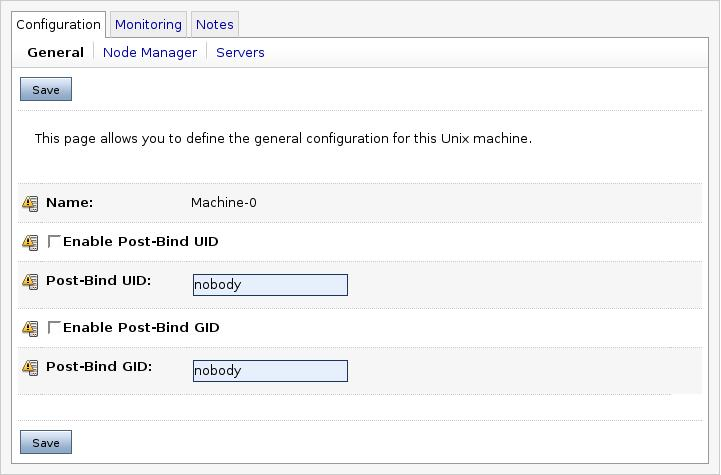
Para asignar servidores a una máquina, nos iremos a cada servidor y en la pestaña de Configuration->General asociamos ese servidor a esa máquina.
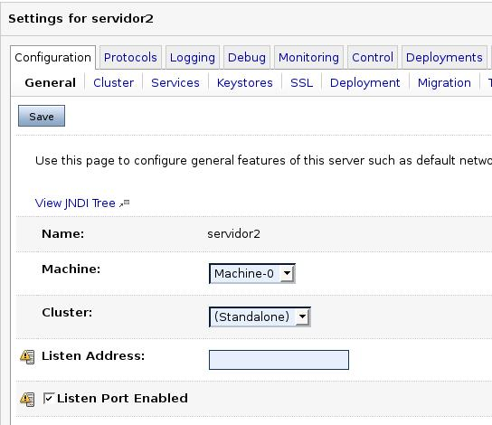
De vuelta a las máquinas, los servidores asociados a esta máquina aparecerán en la pestaña Configuration->servers. Desde este punto también podemos añadir servidores a la máquina.
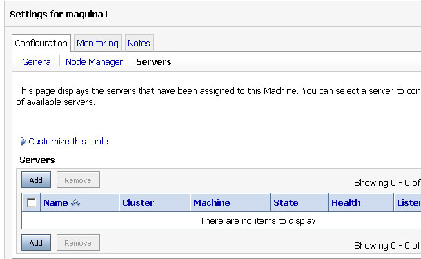
Para añadir servidores, pinchamos en Add y seleccionamos los servidores que queramos añadir.
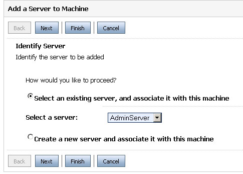
Administración desde línea de comandos
La administración desde línea de comandos es una herramienta útil para el control del sistema. Nos permite realizar varias tareas de monitorización y comprobación del sistema. También es útil en modo producción, pues normalmente se deshabilita la consola de administración por motivos de seguridad.
El comando a ejecutar es el siguiente:
java -cp $BEA_HOME/weblogic92/server/lib/weblogic.jar weblogic.Admin -url URL -username usuario -password contraseña COMANDO argumentos
El comando no es más que una llamada a la clase weblogic.Admin que se encuentra en el fichero weblogic.jar proporcionado por BEA. El parámetro URL especifica la dirección URL del servidor de administración o bien del servidor contra el que vayamos a realizar el comando. Debemos especificar también el puerto en la dirección. El usuario y su contraseña asociada deben ser válidos para el comando que vamos a ejecutar. Los posibles comandos a utilizar pueden ser algunos de los siguientes:
| CONNECT | Realiza el especificado número de conexiones y devuelve el tiempo (en milisegundos) total y medio de conexión. | ||
| ejemplo | java weblogic.Admin -url t3://localhost:7001 -username
system -password weblogic CONNECT 25
Connection: 0 - 18 ms Connection: 1 - 7 ms Connection: 2 - 7 ms Connection: 3 - 7 ms Connection: 4 - 9 ms Connection: 5 - 7 ms Connection: 6 - 10 ms |
||
|
DISCOVERMANAG EDSERVER |
Provoca que el servidor de administración reestablezca el control administrativo sobre los servidores administrados. | ||
| ejemplo | java weblogic.Admin -url t3://localhost:7001 -username system -password weblogic DISCOVERMANAGEDSERVER -serverName servidor2 -listenPort 6001 -listenAddress localhost | ||
| FORCESHUTDOWN | Termina de forma inmediata un proceso servidor pasado como argumento. | ||
| ejemplo | java weblogic.Admin -url t3://localhost:7001 -username
system -password weblogic FORCESHUTDOWN servidor2
Server "servidor2" was force shutdown successfully ... |
||
| GETSTATE | Devuelve el estado del servidor pasado como argumento. | ||
| ejemplo | java weblogic.Admin -url t3://localhost:7001 -username
system -password weblogic GETSTATE servidor2
Current state of "servidor2" : RUNNING |
||
| HELP | Muestra ayuda de un comando o de todos (ALL). | ||
| ejemplo | java weblogic.Admin -url t3://localhost:7001 -username system -password weblogic HELP GETSTATE | ||
| LICENSES | Lista las licencias instaladas en la máquina. | ||
| ejemplo | java weblogic.Admin -url t3://localhost:7001 -username system -password weblogic LICENSES | ||
| PING | Envía un mensaje para verificar que un servidor está disponible y aceptando peticiones. Opcionalmente podemos pasarle dos argumentos: el número de veces intentos y el tamaño de cada paquete. | ||
| ejemplo | java weblogic.Admin -url t3://localhost:7001 -username
system -password weblogic PING 10 1000
Sending 10 pings of 1.000 bytes. RTT = ~185 milliseconds, or ~18 milliseconds/packet |
||
| SERVERLOG | Muestra el fichero log de un servidor. Se puede especificar un intervalo de tiempo a mostrar. En el ejemplo se muestra desde las 14:00 horas del 24 de diciembre a las 10:00 horas del 31 de diciembre. | ||
| ejemplo | java weblogic.Admin -url t3://localhost:7001 -username system -password weblogic SERVERLOG "2002/12/24 14:00" "2002/12/31 10:00" | ||
| SHUTDOWN | Para la ejecución de un servidor (Graceful). Podemos especificar los mismo parámetros que desde la consola: que ignore las sesiones abiertas y el timeout en segundos que esperará antes de pararlo. | ||
| ejemplo | java weblogic.Admin -url t3://localhost:7001 -username system -password weblogic SHUTDOWN -ignoreExistingSessions -timeout 10 servidor1 | ||
| START | Arranca un servidor si tenemos disponible el Node Manager. | ||
| ejemplo | java weblogic.Admin -url t3://localhost:7001 -username system -password weblogic START servidor1 | ||
| THREAD_DUMP | Muestra información de los hilos de ejecución que se están ejecutando en el servidor, por la salida estándar de este. | ||
| ejemplo | java weblogic.Admin -url t3://localhost:7001 -username system -password weblogic THREAD_DUMP servidor1 | ||
| VERSION | Muestra la versión del software Weblogic. | ||
| ejemplo | java weblogic.Admin -url t3://localhost:7001 -username system -password weblogic VERSION | ||
Existen otros comandos y utilidades adicionales que se detallan a continuación. En todos ellos hace falta incluir el fichero weblogic.jar en el classpath.
| dbping | Realiza una conexión a la base de datos especificada utilizando una clase de las proporcionadas por WebLogic. | ||
| java utils.dbping ORACLE_THIN system oracle localhost:1521:j2eebd
**** Success!!! **** You can connect to the database in your app using: java.util.Properties props = new java.util.Properties(); props.put("user", "system"); props.put("password", "oracle"); |
|||
| system | Obtiene información del sistema: la versión y el desarrollador de Java, el classpath, el nombre, arquitectura y versión del sistema operativo | ||
| ejemplo | java utils.system
* * * * * * * java.version * * * * * * * 1.4.2_01 * * * * * * * java.vendor * * * * * * * Sun Microsystems Inc. * * * * * * * java.class.path * * * * * * * weblogic.jar * * * * * * * os.name * * * * * * * Windows XP * * * * * * * os.arch * * * * * * * x86 * * * * * * * os.version * * * * * * * 5.1 |
||
| myip | Obtiene la dirección IP y el nombre DNS de la máquina | ||
| ejemplo | java utils.myip Host portatil-miguel is assigned IP address: 169.254.100.36 | ||
| Deployer | Controla el despliegue de aplicaciones | ||
| ejemplo: desplegar una aplicación |
java weblogic.Deployer -adminurl t3://localhost:7001 -username system -password weblogic -name faqs -targets adminServer,servidor2 -deploy c:/myapps/faqs.war |
||
| ejemplo: eliminar una aplicación |
java weblogic.Deployer -adminurl t3://localhost:7001 -username system -password weblogic -name faqs -targets adminServer -undeploy |
||
| ejemplo: reactivar una aplicación |
java weblogic.Deployer -adminurl t3://localhost:7001 -username system -password weblogic -name faqs -targets adminServer -redeploy |
||